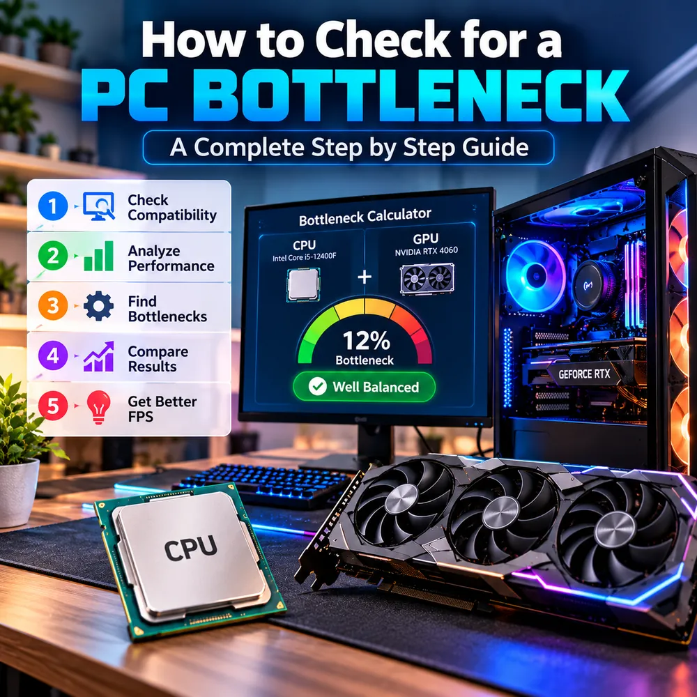

Bottleneck Checker: How to Test Your PC for a Bottleneck Step by Step
Do I have a bottleneck? What is my bottleneck? This guide gives you a simple five-step bottleneck test that combines a calculator estimate with real measurements from your own PC, so you can stop guessing and find out what is actually holding your frame rate back.

The quick answer
A reliable bottleneck check has two halves. First, use a bottleneck checker or calculator to get a quick estimate of how well your processor and graphics card match. Second, confirm that estimate by watching your CPU, GPU, RAM and temperatures while you play. The estimate tells you where to look, and the measurements tell you what is true.
If you only have two minutes, do this: start a game, open a monitoring tool, and see which part sits near its limit while the others have spare capacity. That part is your bottleneck.
Do I have a bottleneck? What this question really means
Every PC has a bottleneck, because one component always reaches its limit first. So when people ask "am I bottlenecking?" they usually mean one of three things:
- Is my frame rate lower than my hardware should deliver?
- Is one component being badly underused?
- Will a new part I plan to buy be held back by the rest of my system?
Your answer decides which steps below matter most. For the last question, the "will it bottleneck" check, steps 1 and 4 are the important ones, because the part is not installed yet.
Step 1: Check compatibility
Before measuring performance, make sure the parts actually fit together. A bottleneck test is meaningless if the system is limited by something simple.
- Socket and chipset: the CPU must match the motherboard socket, and some boards need a BIOS update for newer processors.
- RAM type: DDR4 and DDR5 are not interchangeable, and the motherboard supports only one.
- Graphics card slot and power: the card needs a PCIe slot, enough physical room in the case, and a power supply with the connectors and wattage the GPU maker recommends.
- Monitor connection: the display cable should go into the graphics card, not the motherboard.
Compatibility is a yes or no question. Balance comes next. Our PC upgrade checklist covers every item in detail.
Step 2: Analyze performance with a real test
Now run the actual bottleneck test. You need a monitoring tool that shows CPU, GPU, RAM and temperature while a game is running. Windows Task Manager works for a first look. Overlay tools such as MSI Afterburner with RivaTuner, or HWiNFO, give per-core detail and logging. Our guide to checking PC usage shows how to set these up.
- Close background apps so the test reflects normal gaming.
- Start a game you actually play and use the same scene for every test. A repeatable, demanding area works best.
- Play for five to ten minutes so temperatures and clocks settle.
- Record GPU usage, the busiest CPU cores, RAM used, temperatures and your frame rate.
Avoid judging from a menu or a loading screen. Those do not stress the system the way gameplay does.
Step 3: Find the bottleneck
Match what you recorded to one of these patterns:
- GPU usage 95 to 100%, CPU has headroom: a GPU bottleneck. Normal and healthy. See our GPU bottleneck guide.
- GPU usage below 90%, one or two CPU cores near 100%: a CPU bottleneck. Read about the difference between CPU and GPU bottlenecks.
- RAM near full, long freezes: a memory problem. See the RAM bottleneck guide.
- High temperatures and falling clock speeds: thermal throttling, which is not a true bottleneck. See thermal throttling vs CPU bottleneck.
- Nothing is maxed and FPS sits at a round number such as 60: check for a frame cap, V-Sync or a monitor refresh rate set too low.
Then run the resolution test: lower the resolution for one test. If the frame rate barely changes, the CPU is the likely limit. If it jumps, the GPU was the limit.
Step 4: Compare results with a bottleneck calculator
This is where a bottleneck calculator earns its place. Enter your processor and graphics card, choose your resolution and use case, and compare the estimate to what you measured in step 3.
- They agree: you can be fairly confident in the diagnosis.
- They disagree: trust your measurement. Calculators work from averages, and your game, settings, RAM speed and cooling can push the real result either way.
Some people search for an is my PC bottleneck calculator or a computer bottleneck checker expecting a single definitive verdict. No online tool can provide that, because the answer depends on the game and the settings. Read what a good bottleneck percentage is to put the number in context. Low single digits to the low teens is generally a well-matched system, but the number is a guide rather than a grade.
For planning, the calculator is also the quickest way to answer "will it bottleneck?" before you buy. Try a few combinations in the free PC bottleneck checker, compare them, and pair the result with benchmarks for the games you play.
Step 5: Use the result to get better FPS
Once you know your limit, act on that limit rather than on a hunch.
- GPU limit: lower the heaviest settings, enable DLSS, FSR or XeSS if the game supports it, or plan a graphics card upgrade.
- CPU limit: close background apps, raise graphics settings so the GPU shares the load, cap the frame rate for steadier pacing, or plan a processor upgrade.
- RAM limit: enable XMP or EXPO, run dual-channel memory, and add capacity only if usage actually reaches the limit.
- Thermal limit: clean the dust, improve airflow and check the cooler mounting.
Change one setting at a time and re-run the same test scene. That is how you prove a change worked. The full list of fixes, in the right order, is in our guide to fixing a PC bottleneck and boosting FPS.
A note on bandwidth bottleneck tests
The phrase bandwidth bottleneck test can mean different things. For online games, it usually means a network test: run a speed test and check ping and packet loss, because a slow or unstable connection causes lag that no CPU or GPU upgrade will fix. For hardware, bandwidth can refer to memory speed or the PCIe link between the GPU and the motherboard. Those are rarely the main limit on a modern desktop, but a GPU installed in a slower slot, or RAM running at a default low speed, is worth a quick check in your BIOS or a tool such as GPU-Z or HWiNFO.
When it is not a bottleneck at all
If your test shows no part near its limit, no thermal throttling and a steady frame rate, you may not have a hardware problem. Check for game-specific issues, outdated or corrupted graphics drivers, a very slow hard drive or a laptop in battery mode. Random stutter that appears only in one title is often a software issue. Our guide to fixing stuttering and 1% lows covers these cases.
Conclusion
A good bottleneck checker workflow is simple: confirm compatibility, test with real gameplay, find the part near its limit, compare it with a calculator estimate, then fix that specific limit. Treat the calculator as a map and your monitoring as the ground truth, and you will know what is holding your PC back before you spend a cent.
Frequently Asked Questions
How do I check if my PC has a bottleneck?
Run a game while monitoring CPU, GPU, RAM and temperature. If GPU usage is near 100%, the GPU is the limit. If GPU usage is well below 90% while a few CPU cores are pinned, the CPU is the limit. A calculator can give a pre-test estimate.
What is the best way to run a bottleneck test?
Use a repeatable scene in a game you play, close background apps, play for several minutes so clocks settle, and log usage and frame rate. Then repeat at a lower resolution to see whether the frame rate changes.
Can I check for a bottleneck before buying a part?
Yes. A bottleneck calculator lets you compare processor and graphics card combinations in advance, and independent benchmarks for your games add real-world context. Treat the result as an estimate rather than a guarantee.
What does a bandwidth bottleneck test measure?
It depends on the context. For online play it usually means a network test of speed, ping and packet loss. For hardware it can mean memory speed or the PCIe link between the GPU and motherboard.
Is a 10% bottleneck bad?
Generally no. Small percentages in the low single digits to low teens are typical of a reasonably matched system, and the real-world effect varies by game and resolution.